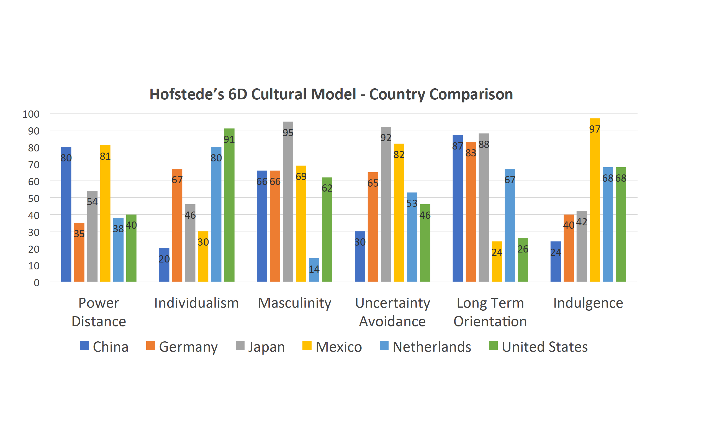
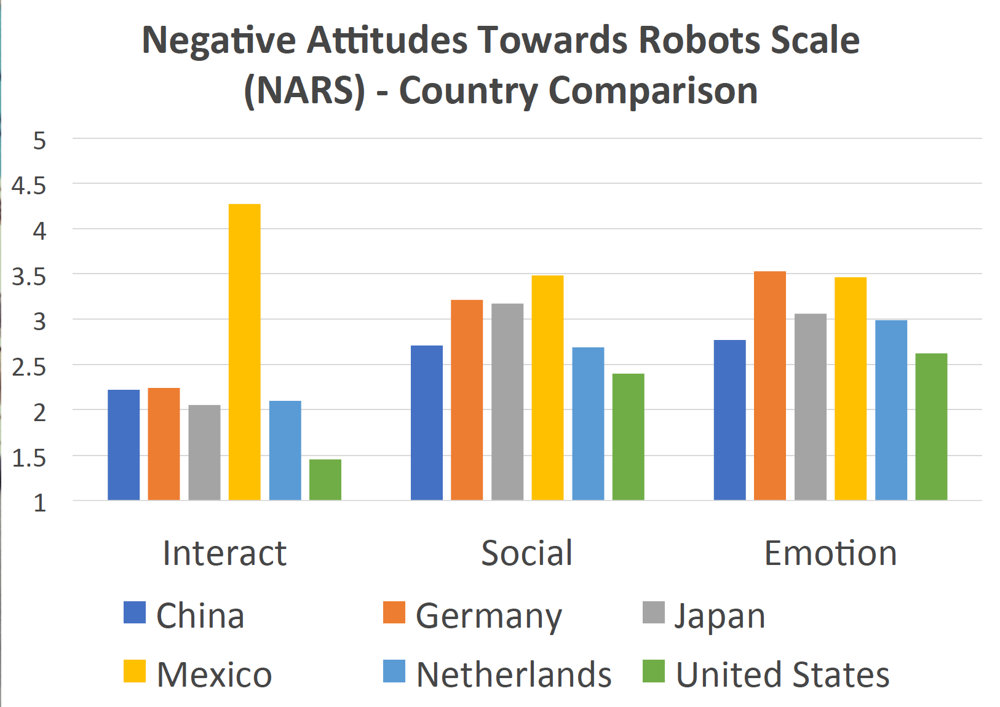

Humanity is facing a turning point in its history. Artificial Intelligence (AI) plays a crucial role not only in computer science and robotics but also in the communication between machines and machines, and between humans and machines. With the rise of this new interactive space, it is becoming ever more critical to ask what role intercultural communications will play in this complex correlation. Does culture still matter in the era of AI?
To explore this question, we mobilize Geert Hofstede’s 6D cultural model (2010, 2020), one of the most comprehensive models for describing a country's characteristics and apply it to the Negative Attitudes Towards Robots Scale (NARS) (Nomura, Kanda, & Suzuki, 2006), a study which has been conducted in six countries (China, Germany, Japan, Mexico, Netherlands, United States) to measure human attitude towards robots within the cross-cultural perspective (Bartneck et al, 2005). In this paper, we understand culture as Hofstede’s ‘National Culture’ which he defines as “the collective programming of the mind distinguishing the members of one group or category of people from others” (Hofstede Insights 2020). The NARS scale provides a foundation that has been used in several studies to measure human attitudes towards humanoid robots (Riek et al, 2010). Together these two approaches provide a cross-cultural framework for analyzing an emerging era of communications in the context of Human-Robot Interaction (HRI).
Figure 1: Hofstede’s 6D Cultural Model - Country Comparison
Figure 2: Negative Attitudes Towards Robots Scale (NARS) - Country Comparison
Our initial findings show there is a correlation between a country’s ‘Individualism’, ‘Power Distance’ and its attitude towards HRI. For instance, highly individual societies with less power inequality, like the United States, have more positive attitudes towards HRI when compared to collectivist cultures, like Mexico. One exception is China; this could be due to the country’s high level of technology manufacturing involving industrial robots. Another of our findings is that countries that are ‘Long-term Oriented’, such as Netherlands and Germany, are less negative in regard to HRI, compared to those who focus on the short term, like Mexico. The exception here is the United States; this could be that despite the States’ ‘Short-term orientation’, it has a long history of interacting with technology and robots. A tendency also exists between a country’s ‘Uncertainty Avoidance’ and their attitude towards the social influence of robots, with a greater desire to avoid uncertainty correlating to more negative attitudes toward robots’ social influence. In terms of attitude towards ‘Emotions’ in interaction with robots, a correlation with Hofstede’s 6D cultural model was not identified.
As a pilot study combining Hofstede’s 6D cultural model and NARS, our aim with this study is to identify possible empirical correlations that can then be supported through a larger multi-country study evaluating AI and HRI through a cross-cultural lens. Our critical comparative analysis illustrates that, though technological development cannot be contained within a country's territorial boundaries, culture is a crucial variable in HRI. A cultural and qualitative perspective is needed in future studies of HRI to understand what role intercultural communications will play in this complex interaction.
REFERENCES:
Bartneck, C., Nomura, T., Kanda, T., Suzuki, T., & Kennsuke, K. (2005). A cross-cultural study on attitudes towards robots. Proceedings of the HCI International, Las Vegas.
Country Comparison - Hofstede Insights. (2020). Hofstede Insights. Retrieved 1 May 2018, from https://www.hofstedeinsights.com/country-comparison.
Hofstede, G., Hofstede, G. J., & Minkov, M. (2010). Cultures and organizations. New York, NY: McGraw-Hill.
Nomura T, Kanda T, Suzuki T. (2006). Experimental investigation into influence of negative attitudes toward robots on human-robot interaction. AI Soc 20(2):138–150.
Riek, L. D., Mavridis, N., Antali, S., Darmaki, N., Ahmed, Z., Al-Neyadi, M., et al. (2010). “Ibn sina steps out: Exploring Arabic attitudes toward humanoid robots,” in Proceedings of the 2nd International Symposium on New Frontiers in Human-robot Interaction, AISB, Leicester (Leicester), 1.